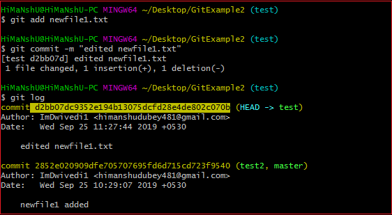

Git Tutorial
Install git and create a GitHub account
The first two things you'll want to do are install git and create a free GitHub account. Follow the instructions here to install git (if it's not already installed). Note that for this tutorial we will be using git on the command line only. While there are some great git GUIs (graphical user interfaces), I think it's easier to learn git using git-specific commands first and then to try out a git GUI once you're more comfortable with the command. A note: 95% of other online git resources and discussions will also be for the command-line interface. Once you've done that, create a GitHub account here.
Create a local git repository
When creating a new project on your local machine using git, you'll first create a new repository (or often, 'repo', for short). To use git we'll be using the terminal. If you don't have much experience with the terminal and basic commands, check out this tutorial (If you don’t want/ need a short history lesson, skip to step three.) To begin, open up a terminal and move to where you want to place the project on your local machine using the cd (change directory) command. For example, if you have a 'projects' folder on your desktop, you'd do something like:
To initialize a git repository in the root of the folder, run the
init command
Git ADD
Git add command is a straight forward command. It adds files to the staging area. We can add single or multiple files at once in the staging area. It will be run as:
git add .

Git Commit
The commit command will commit the changes and generate a commit-id. The commit command without any argument will open the default text editor and ask for the commit message. We can specify our commit message in this text editor. It will run as follows:
git commit -m "your text"

Git Clone
The git clone is a command-line utility which is used to make a local copy of a remote repository. It accesses the repository through a remote URL. Usually, the original repository is located on a remote server, often from a Git service like GitHub, Bitbucket, or GitLab. The remote repository URL is referred to the origin.
git clone URL

Git FORK
A fork is a rough copy of a repository. Forking a repository allows you to freely test and debug with changes without affecting the original project. One of the excessive use of forking is to propose changes for bug fixing. To resolve an issue for a bug that you found, you can: Fork the repository. Make the fix. Forward a pull request to the project owner. Forking is not a Git function; it is a feature of Git service like GitHub. When to Use Git Fork Generally, forking a repository allows us to experiment on the project without affecting the original project. Following are the reasons for forking the repository: Propose changes to someone else's project. Use an existing project as a starting point.

Git PULL
he term pull is used to receive data from GitHub. It fetches and merges changes from the remote server to your working directory. The git pull command is used to pull a repository.
git pull URL

Git MERGE
In Git, the merging is a procedure to connect the forked history. It joins two or more development history together. The git merge command facilitates you to take the data created by git branch and integrate them into a single branch. Git merge will associate a series of commits into one unified history. Generally, git merge is used to combine two branches.
git merge "query"
